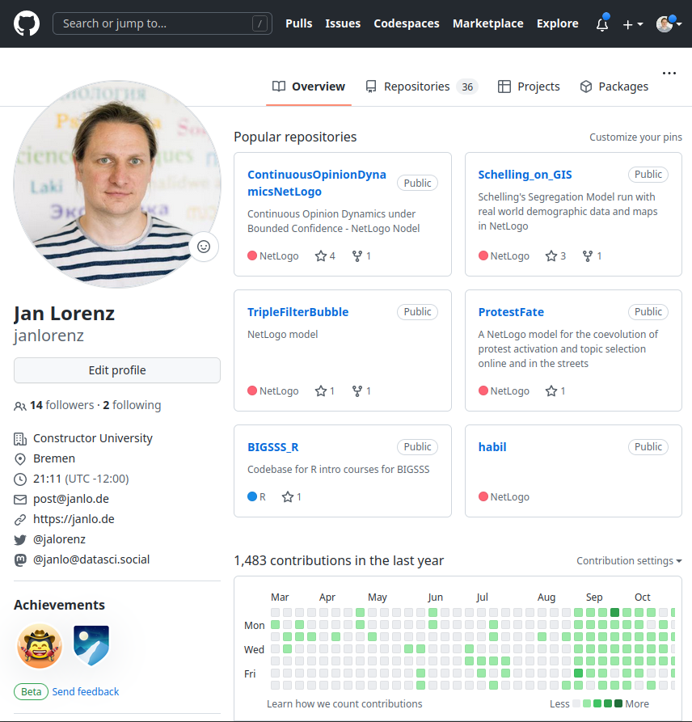

Communicating and Reporting of Data Science Projects
Aligning our tools and a quarto tutorial
Communicating and Reporting in the Data Science Process
From R for Data Science:

Sort our reporting tools
- quarto (.qmd)
- html
- git
- GitHub
- json
- VSCode
- notebook (.ipynb)
- Google Docs
- PowerPoint
- revealjs
- \(\LaTeX\)
- RStudio
- markdown (.md)
- pandoc
- Word
- Excel
What are the different categories in this list?
Tools sorted
File Formats
html
pdf
json
revealjs
qmd
ipynb
docx, pptx, xlsx
Commandline tools
- quarto
- git
- pandoc
- \(\LaTeX\)
IDEs / App’s
VSCode
RStudio
Excel
PowerPoint
Word
Web services
- GitHub
- Google Docs
- Google Spreadsheets
- Google Slides
In what way are these tools open-source/free?
Open-source vs. proprietary
In between: Open-source but developers and maintainers are tied to a company
Why is it relevant to be informed about it?
html and json
- html is a markup language for the structure of a webpage. It is the standard language for documents designed to be displayed in a web browser.
- json is a lightweight data-interchange format. It is easy for humans to read and write. It is easy for machines to parse and generate.
Webpage

html
<!DOCTYPE html>
<html lang="en" data-color-mode="auto" data-light-theme="light" data-dark-theme="dark" data-a11y-animated-images="system">
<head>
<meta charset="utf-8">
<link rel="dns-prefetch" href="https://github.githubassets.com">
<link rel="dns-prefetch" href="https://avatars.githubusercontent.com">
<link rel="dns-prefetch" href="https://github-cloud.s3.amazonaws.com">
<link rel="dns-prefetch" href="https://user-images.githubusercontent.com/">
<link rel="preconnect" href="https://github.githubassets.com" crossorigin>
<link rel="preconnect" href="https://avatars.githubusercontent.com">
<link crossorigin="anonymous" media="all" rel="stylesheet" href="https://github.githubassets.com/assets/light-fe3f886b577a.css" /><link crossorigin="anonymous" media="all" rel="stylesheet" href="https://github.githubassets.com/assets/dark-a1dbeda2886c.css" /><link data-color-theme="dark_dimmed" crossorigin="anonymous" media="all" rel="stylesheet" data-href="https://github.githubassets.com/assets/dark_dimmed-1ad5cf51dfeb.css" /><link data-color-theme="dark_high_contrast" crossorigin="anonymous" media="all" rel="stylesheet" data-href="https://github.githubassets.com/assets/dark_high_contrast-11d3505dc06a.css" /><link data-color-theme="dark_colorblind" crossorigin="anonymous" media="all" rel="stylesheet" data-href="https://github.githubassets.com/assets/dark_colorblind-8b800495504f.css" /><link data-color-theme="light_colorblind" crossorigin="anonymous" media="all" rel="stylesheet" data-href="https://github.githubassets.com/assets/light_colorblind-daa38c88b795.css" /><link data-color-theme="light_high_contrast" crossorigin="anonymous" media="all" rel="stylesheet" data-href="https://github.githubassets.com/assets/light_high_contrast-1b9ea565820a.css" /><link data-color-theme="light_tritanopia" crossorigin="anonymous" media="all" rel="stylesheet" data-href="https://github.githubassets.com/assets/light_tritanopia-e4be9332dd6c.css" /><link data-color-theme="dark_tritanopia" crossorigin="anonymous" media="all" rel="stylesheet" data-href="https://github.githubassets.com/assets/dark_tritanopia-0dcf95848dd5.css" />
<link crossorigin="anonymous" media="all" rel="stylesheet" href="https://github.githubassets.com/assets/primer-c581c4e461bb.css" />
<link crossorigin="anonymous" media="all" rel="stylesheet" href="https://github.githubassets.com/assets/global-57fbee0c477b.css" />
<link crossorigin="anonymous" media="all" rel="stylesheet" href="https://github.githubassets.com/assets/github-0485c151ab71.css" />
<link crossorigin="anonymous" media="all" rel="stylesheet" href="https://github.githubassets.com/assets/profile-085697a49485.css" />
<script crossorigin="anonymous" defer="defer" type="application/javascript" src="https://github.githubassets.com/assets/wp-runtime-e59b9a7db8fe.js"></script>
<script crossorigin="anonymous" defer="defer" type="application/javascript" src="https://github.githubassets.com/assets/vendors-node_modules_stacktrace-parser_dist_stack-trace-parser_esm_js-node_modules_github_bro-327bbf-fe611eb551b1.js"></script>
<script crossorigin="anonymous" defer="defer" type="application/javascript" src="https://github.githubassets.com/assets/ui_packages_soft-nav_soft-nav_ts-65c0a1a3eb40.js"></script>
<script crossorigin="anonymous" defer="defer" type="application/javascript" src="https://github.githubassets.com/assets/environment-10cb150f2afe.js"></script>
<script crossorigin="anonymous" defer="defer" type="application/javascript" src="https://github.githubassets.com/assets/vendors-node_modules_github_selector-observer_dist_index_esm_js-2646a2c533e3.js"></script>
<script crossorigin="anonymous" defer="defer" type="application/javascript" src="https://github.githubassets.com/assets/vendors-node_modules_delegated-events_dist_index_js-node_modules_github_details-dialog-elemen-63debe-c04540d458d4.js"></script>
<script crossorigin="anonymous" defer="defer" type="application/javascript" src="https://github.githubassets.com/assets/vendors-node_modules_github_relative-time-element_dist_index_js-52e1ce026ad1.js"></script>
<script crossorigin="anonymous" defer="defer" type="application/javascript" src="https://github.githubassets.com/assets/vendors-node_modules_fzy_js_index_js-node_modules_github_markdown-toolbar-element_dist_index_js-e3de700a4c9d.js"></script>
<script crossorigin="anonymous" defer="defer" type="application/javascript" src="https://github.githubassets.com/assets/vendors-node_modules_github_auto-complete-element_dist_index_js-node_modules_github_catalyst_-6afc16-e779583c369f.js"></script>
<script crossorigin="anonymous" defer="defer" type="application/javascript" src="https://github.githubassets.com/assets/vendors-node_modules_github_file-attachment-element_dist_index_js-node_modules_github_text-ex-3415a8-7ecc10fb88d0.js"></script>
<script crossorigin="anonymous" defer="defer" type="application/javascript" src="https://github.githubassets.com/assets/vendors-node_modules_github_filter-input-element_dist_index_js-node_modules_github_remote-inp-79182d-befd2b2f5880.js"></script>
<script crossorigin="anonymous" defer="defer" type="application/javascript" src="https://github.githubassets.com/assets/vendors-node_modules_primer_view-components_app_components_primer_primer_js-node_modules_gith-6a1af4-ec6fc1a7364a.js"></script>
<script crossorigin="anonymous" defer="defer" type="application/javascript" src="https://github.githubassets.com/assets/github-elements-fc0e0b89822a.js"></script>
<script crossorigin="anonymous" defer="defer" type="application/javascript" src="https://github.githubassets.com/assets/element-registry-4a600a4a3b31.js"></script>
<script crossorigin="anonymous" defer="defer" type="application/javascript" src="https://github.githubassets.com/assets/vendors-node_modules_lit-html_lit-html_js-9d9fe1859ce5.js"></script>
<script crossorigin="anonymous" defer="defer" type="application/javascript" src="https://github.githubassets.com/assets/vendors-node_modules_manuelpuyol_turbo_dist_turbo_es2017-esm_js-4140d67f0cc2.js"></script>
<script crossorigin="anonymous" defer="defer" type="application/javascript" src="https://github.githubassets.com/assets/vendors-node_modules_github_mini-throttle_dist_index_js-node_modules_github_alive-client_dist-bf5aa2-424aa982deef.js"></script>
<script crossorigin="anonymous" defer="defer" type="application/javascript" src="https://github.githubassets.com/assets/vendors-node_modules_primer_behaviors_dist_esm_dimensions_js-node_modules_github_hotkey_dist_-9fc4f4-d434ddaf3207.js"></script>
<script crossorigin="anonymous" defer="defer" type="application/javascript" src="https://github.githubassets.com/assets/vendors-node_modules_color-convert_index_js-35b3ae68c408.js"></script>
<script crossorigin="anonymous" defer="defer" type="application/javascript" src="https://github.githubassets.com/assets/vendors-node_modules_github_remote-form_dist_index_js-node_modules_github_session-resume_dist-def857-2a32d97c93c5.js"></script>
<script crossorigin="anonymous" defer="defer" type="application/javascript" src="https://github.githubassets.com/assets/vendors-node_modules_github_paste-markdown_dist_index_esm_js-node_modules_github_quote-select-15ddcc-1512e06cfee0.js"></script>
<script crossorigin="anonymous" defer="defer" type="application/javascript" src="https://github.githubassets.com/assets/app_assets_modules_github_updatable-content_ts-430cacb5f7df.js"></script>
<script crossorigin="anonymous" defer="defer" type="application/javascript" src="https://github.githubassets.com/assets/app_assets_modules_github_behaviors_keyboard-shortcuts-helper_ts-app_assets_modules_github_be-f5afdb-5b2007cdf918.js"></script>
<script crossorigin="anonymous" defer="defer" type="application/javascript" src="https://github.githubassets.com/assets/app_assets_modules_github_sticky-scroll-into-view_ts-737bcded84e3.js"></script>
<script crossorigin="anonymous" defer="defer" type="application/javascript" src="https://github.githubassets.com/assets/app_assets_modules_github_behaviors_include-fragment_ts-app_assets_modules_github_behaviors_r-4077b4-c009cc5472ac.js"></script>
<script crossorigin="anonymous" defer="defer" type="application/javascript" src="https://github.githubassets.com/assets/app_assets_modules_github_behaviors_commenting_edit_ts-app_assets_modules_github_behaviors_ht-83c235-30c68bad2844.js"></script>
<script crossorigin="anonymous" defer="defer" type="application/javascript" src="https://github.githubassets.com/assets/behaviors-e4b7d4dc2a31.js"></script>
<script crossorigin="anonymous" defer="defer" type="application/javascript" src="https://github.githubassets.com/assets/vendors-node_modules_delegated-events_dist_index_js-node_modules_github_catalyst_lib_index_js-06ff531-32d7d1e94817.js"></script>
<script crossorigin="anonymous" defer="defer" type="application/javascript" src="https://github.githubassets.com/assets/notifications-global-f5b58d24780b.js"></script>
<script crossorigin="anonymous" defer="defer" type="application/javascript" src="https://github.githubassets.com/assets/vendors-node_modules_primer_behaviors_dist_esm_focus-zone_js-d55308df5023.js"></script>
<script crossorigin="anonymous" defer="defer" type="application/javascript" src="https://github.githubassets.com/assets/vendors-node_modules_github_remote-form_dist_index_js-node_modules_primer_behaviors_dist_esm_-b34105-c2daa8698316.js"></script>
<script crossorigin="anonymous" defer="defer" type="application/javascript" src="https://github.githubassets.com/assets/profile-b5acccb095f5.js"></script>
<title>janlorenz (Jan Lorenz) · GitHub</title>
<meta name="route-pattern" content="/:user_id(.:format)">
<meta name="current-catalog-service-hash" content="4a1c50a83cf6cc4b55b6b9c53e553e3f847c876b87fb333f71f5d05db8f1a7db">
<meta name="request-id" content="C5B4:6464:820AAD0:85EA185:6409A58D" data-pjax-transient="true"/><meta name="html-safe-nonce" content="d427c0738d9b56f38d060a9b907607a13d12687a0da31495476f2ed9851e74cc" data-pjax-transient="true"/><meta name="visitor-payload" content="eyJyZWZlcnJlciI6IiIsInJlcXVlc3RfaWQiOiJDNUI0OjY0NjQ6ODIwQUFEMDo4NUVBMTg1OjY0MDlBNThEIiwidmlzaXRvcl9pZCI6IjUzMjgzMzcyNjAyNDQ5MjQyOSIsInJlZ2lvbl9lZGdlIjoiZnJhIiwicmVnaW9uX3JlbmRlciI6ImZyYSJ9" data-pjax-transient="true"/><meta name="visitor-hmac" content="a7507dcc7c07f150c5dd746f03e2c01ffcd592ab9657ec0ac8c65ebc792c736d" data-pjax-transient="true"/>
<meta name="github-keyboard-shortcuts" content="" data-turbo-transient="true" />
<meta name="selected-link" value="overview" data-turbo-transient>
<meta name="google-site-verification" content="c1kuD-K2HIVF635lypcsWPoD4kilo5-jA_wBFyT4uMY">
<meta name="google-site-verification" content="KT5gs8h0wvaagLKAVWq8bbeNwnZZK1r1XQysX3xurLU">
<meta name="google-site-verification" content="ZzhVyEFwb7w3e0-uOTltm8Jsck2F5StVihD0exw2fsA">
<meta name="google-site-verification" content="GXs5KoUUkNCoaAZn7wPN-t01Pywp9M3sEjnt_3_ZWPc">
<meta name="google-site-verification" content="Apib7-x98H0j5cPqHWwSMm6dNU4GmODRoqxLiDzdx9I">
<meta name="octolytics-url" content="https://collector.github.com/github/collect" />
<meta name="analytics-location" content="/<user-name>" data-turbo-transient="true" />
</body>
</html>json
{
"login": "janlorenz",
"id": 7503499,
"node_id": "MDQ6VXNlcjc1MDM0OTk=",
"avatar_url": "https://avatars.githubusercontent.com/u/7503499?v=4",
"gravatar_id": "",
"url": "https://api.github.com/users/janlorenz",
"html_url": "https://github.com/janlorenz",
"followers_url": "https://api.github.com/users/janlorenz/followers",
"following_url": "https://api.github.com/users/janlorenz/following{/other_user}",
"gists_url": "https://api.github.com/users/janlorenz/gists{/gist_id}",
"starred_url": "https://api.github.com/users/janlorenz/starred{/owner}{/repo}",
"subscriptions_url": "https://api.github.com/users/janlorenz/subscriptions",
"organizations_url": "https://api.github.com/users/janlorenz/orgs",
"repos_url": "https://api.github.com/users/janlorenz/repos",
"events_url": "https://api.github.com/users/janlorenz/events{/privacy}",
"received_events_url": "https://api.github.com/users/janlorenz/received_events",
"type": "User",
"site_admin": false,
"name": "Jan Lorenz",
"company": "Constructor University",
"blog": "https://janlo.de",
"location": "Bremen",
"email": null,
"hireable": null,
"bio": null,
"twitter_username": "jalorenz",
"public_repos": 21,
"public_gists": 0,
"followers": 14,
"following": 2,
"created_at": "2014-05-06T17:55:13Z",
"updated_at": "2023-02-25T13:02:51Z"
}Markdown and Notebooks
Markdown is a lightweight markup language with plain text formatting syntax
- It is often used to format readme files, for writing messages in online discussion forums, and to create rich text using a plain text editor.
- Can be rendered to html or other markup languages, e.g. by quarto from a quarto markdown file (
qmd).
Notebooks are a way to write and execute code in an interactive environment
- Jupyter notebooks are essentially json files that contain code, markdown, and the output of the code.
- Important difference to markdown: The code is executed and the output is stored in the notebook file. Quarto runs on a file and renders new files, but does not store the output in the source file.
Quarto
- Adapted from the paradigm of literate programming: Computer-readable source code should be interspersed with human-readable explanations.
- Original: Write code together with a human-readable documentation report
- Quarto: Write a report together with your code of analysis

It is a standalone (cross-language, R-independent) adaptation from Rmarkdown and the R-packages knitr.
Quarto works with R and python1


- Uses the independent software
pandoc“a universal document converter” with markdown as its heart. - You can also render jupyter notebooks (
ipynbfiles) by adding a raw cell with quarto YAML at the beginning.
Quarto for Data Science Projects
Four purposes:
- Provide a format to write code, documentation, and other plain text systematically in one file
- Provide reproducible data analysis
- Provide an environment to update reports easily when new data has arrived
- Smoothly move from your working files to publication-ready reports in formats like pdf, docx, html, or a multipage website
Tutorial today
- Create a personal GitHub repository (optional, but necessary to bring the website online)
- Sketch a quarto report for your project
- Discuss various aspects of reports
- Make a presentation from it
- Make a website from it
- (optional) Discuss more aspects
Let us do 1. and create a repository and clone it with RStudio.
Alternatively, open RStudio and create a local new project.
Alternatively, do the same in VSCode.
Reports
Types of reports: Article <- Technical Report <- Tutorial <- Homework (many more)
Structure
- Header with title, author, and (optional) abstract/executive summary
- Main headings: Introduction, Data, Methods, Results, Discussion
- Sub-headings: Topic specific
- Footnotes
- Figures
- Tables
- Cross-references
- Literature references
Code things
- Equations (\(\LaTeX\)-style)
- Code chunks
- Code output
- In-text code-output
Excursion Header: YAML vs. JSON
- YAML is a human-readable data serialization standard that can be used in conjunction with all programming languages and is often used to write configuration files.
- It is even simpler/more “human-readable” than JSON (which is simpler than XML/HTML)
- It uses less brackets and commas but white space (as python)
YAML: https://en.wikipedia.org/wiki/YAML
Official: https://yaml.org/
Tutorial: https://www.cloudbees.com/blog/yaml-tutorial-everything-you-need-get-started
What’s the difference to JSON? https://aws.amazon.com/compare/the-difference-between-yaml-and-json/
Lets make some specifications in the YAML header for HTML output. https://quarto.org/docs/output-formats/html-basics.html: a table-of-content, code-folding, …
Tutorial: Authoring and Scholarly Writing
Let us do the following in a quarto markdown file (qmd)
For the following get help at quarto-Guide -> Authoring
- YAML with author and abstract
- Headlines
- An equation
- An image
- An image created by a code chunk
- An in-text code-output of a numerical value
For the following scholarly writing get help at quarto-Guide -> Authoring -> Scholarly Writing
- Make additional name information
- Make a figure with caption we can refer to
- Add a bibliography
Excursion: Literature References / BibTex
Do you use literature management systems?
- Bib-files are a common way to store literature references
- Google Scholar -> BibTeX
- Zotero
Let us make a citation and reference.
Data Science Workflow
In a normal data science workflow you first:
- Do exploratory data analysis (EDA).
- This produces many output you need to see to understand the data and progress deeper towards your goal.
- You also want to see the code in your output.
- Try several versions of different visualizations of your insights.
- You end up with a very cluttered file which maybe helpful for you but not for external readers (and in the end not even for you anymore…)
Workflow: Towards a final report
- Clean your code!
- Remove unnecessary objects
- Structure that it is most readable for others coders (like you in some weeks)
- Condense your insights of the EDA to
- summarizing text
- few nicely formatted tables and informative graphics which are relevant for the reader
- Make code and raw output vanish by
- removing raw output (or make it a formatted table, or inline code to show code output in markdown text)
- hide code or use code folding in html (the user can check the reproducibility and details by folding out the code snippet)
- Structure the text: sensible (numbered) headingsines, table of content, cross references to figures, footnotes, citations, appendices …
Derivatives of your report
- A presentation with revealjs https://quarto.org/docs/presentations/
- Duplicate the file, adjust the YAML to revealjs and see how it looks and adjust
- A website https://quarto.org/docs/websites/
- We need to write a file
_quarto.ymlto specify the website settings
- We need to write a file